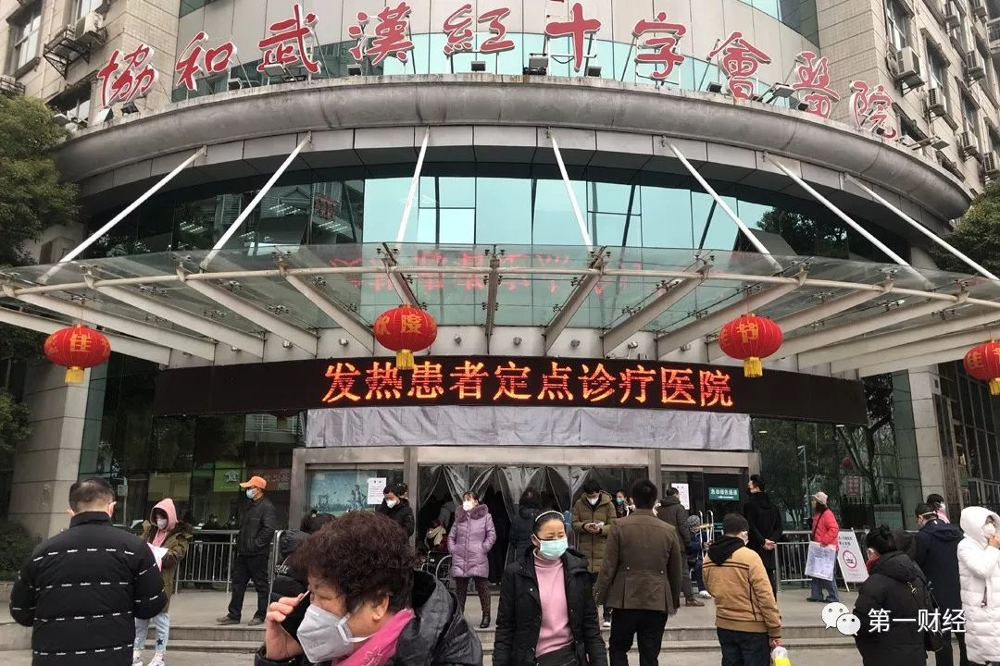
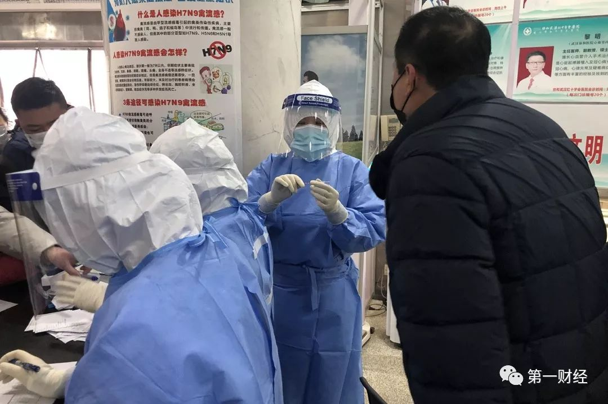
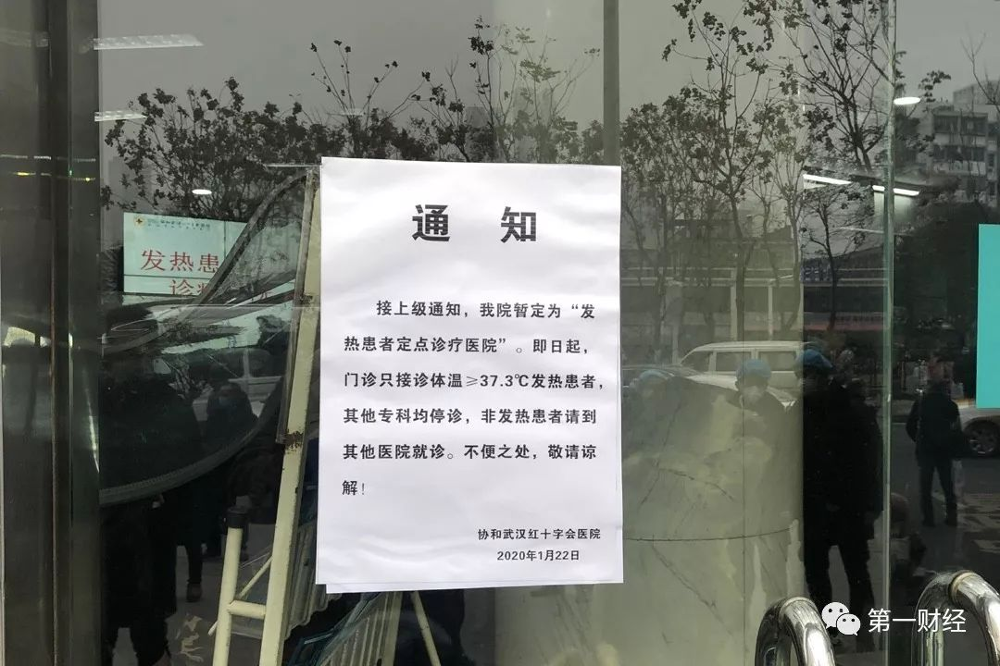
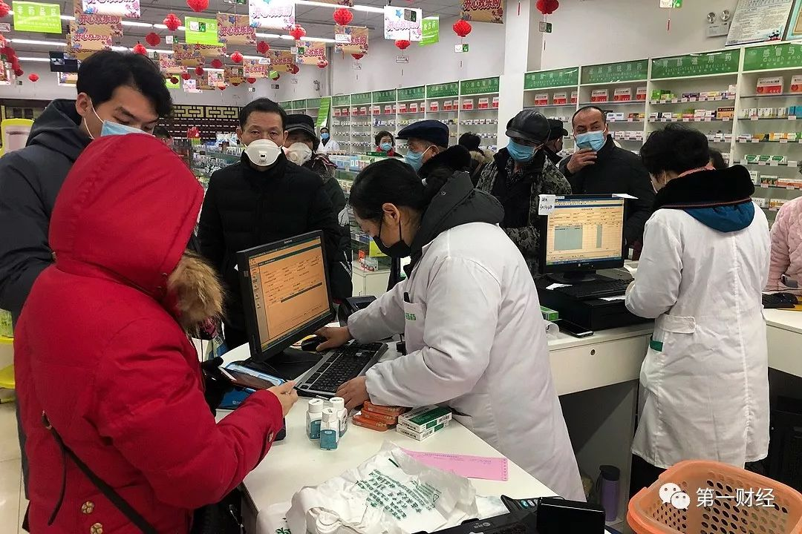
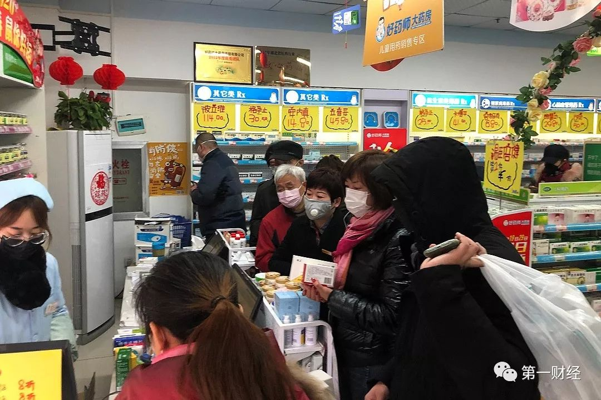
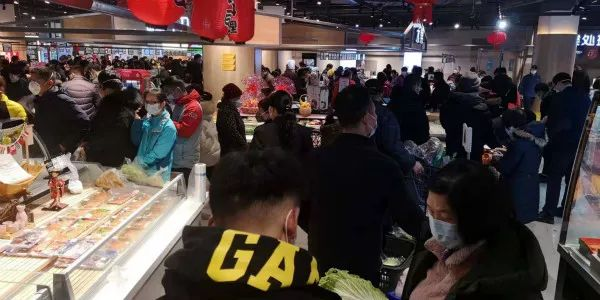

武汉“封城”的第一天
原文链接 备份链接 文 | 王彦入 王丹妮 程静之 殷盛琳 李晓芳 周航 叶雯 曾宪雯 编辑 | 王珊 陶若谷 33岁的刘科戴上两层口罩独自走进地铁，夹杂在路人中间。像他这样拉着行李箱的人并不少见，彼此间默契地保持着距离。三天前，他刚刚从 …
作者 | 第一财经 吴绵强 周芳 陈益刊
编辑 | 张富贵
为了遏制新型冠状病毒感染的肺炎扩散，按照武汉市新型冠状病毒感染的肺炎疫情防控指挥部通告，自1月23日10时起，武汉全市城市公交、地铁、轮渡、长途客运暂停运营；机场、火车站离汉通道暂时关闭。
封城后的武汉人，过得怎样？

▲记者：第一财经 吴绵强
23日上午10时许，第一财经记者在武汉市红十字医院采访了解到，目前等待检测体温的人群已经排起了长队，医护人员身穿防护服给患者监测体温，导诊台的护士正在忙碌地为前来咨询焦急的患者答疑解惑。

▲2020年1月23日，协和武汉红十字会医院发热门诊，不断有前来就诊的市民，均戴着口罩。

▲2020年1月23日，协和武汉红十字会医院发热门诊内，医护人员全副武装对前来问诊的患者检测。

▲2020年1月23日，协和武汉红十字会医院发热门诊大厅，众多市民前来问诊和检测。
护士告诉记者，目前医院有470张床位，但是还没有住满，大家可以根据病情的轻重缓急来判断，如果症状不是很明显，可以到家里待着自行隔离。护士同时表示，如果有疑似病例，将会立即送到病房，做隔离处置措施。
市民周先生已经63岁了，需要监测体温，早上7点就过来排队，一直等到现在。周先生的老伴介绍，丈夫身体不好，有肺部疾病，10天前就出现肺肿，在其他医院无法办理住院，今天才来到这里。

▲2020年1月23日，协和武汉红十字会医院发热门诊内，患者进行信息登记。与普通信息登记不同，这一次信息登记中，除了个人信息之外，还要详细登记住址信息。

▲2020年1月23日，协和武汉红十字会医院发热门诊内，一名市民趟在大厅的椅子等待就诊。

▲2020年1月23日，武汉协和红十字会医院通知，接上级通知，我院暂定为“发热患者定点诊疗医院”。即日起，门诊只接诊体温≥37.3°发热患者，其他专科均停诊，非发热患者请到其他医院就诊。不便之处，敬请谅解。
尽量不出门
尽量不出门，已经成为不少武汉市民的选择。
“我家现在就是不出门。”武汉市民乔先生告诉第一财经记者。
刘女士一早喊上老公去超市买东西，买了三购物车的东西，包括蔬菜、肉类等食品，花了2000多元。“后面就留在家里不出去了”。
张女士告诉第一财经记者，自己几天都没有出门了，买菜主要通过某大型生鲜电商平台。昨天上午下单1个多小时菜就送到了，晚上想再买点菜，下单送菜已经排到今天晚上9点以后。
王女士和家人已经在家宅了多日，身在外地的丈夫原本计划今日赶回武汉，但在上飞机前却被拦下，航班取消。她的爸爸一早赶去超市采购。“希望生活供给充足，希望疫情尽快得到有效控制！”
目前网上也流传着一些超市提高蔬菜价格。第一财经记者致电武商超市相关人士处了解到，网传的天价大白菜为有机净菜，一直是十多块钱一公斤，价格并未上涨。目前超市以保供应为主，价格是随行就市，“新鲜蒜苗不比存货，现在又封城了，价格贵些也可以理解”。
一位武汉市民早上去菜市场发现，大家都在抢着买菜，大白菜都没看见卖了，小白菜(小油菜)5.5元一斤，胡萝卜4.8元一斤。
不仅食物，医药品也成为抢手货。
▲记者：第一财经 吴绵强 周芳

▲图为1月23日，市民在武汉一药店购买温度计。

▲图为1月23日，武汉市民在超市购买防护用品、预防药物和生活用品。
第一财经记者到武汉市区的几家药店比如好药师大药房、惠济药店等探访，药店工作人员说，今天客流量明显比往常多，大家都集中购买防常规防护用品、预防药物以及红外体温计等，防护口罩和手套销售一空。

▲图为1月23日，武汉一山姆会员店，货架上的物品已卖光了。

▲图为1月23日，武汉一山姆会员店个人用品和婴儿护理用品专区，民众排队购买物品。
武汉一家医疗机构的一线医生说，医院急需N95口罩，护目镜，防护服，塑胶手套……，目前不仅仅我们一家单位缺，是所有的单位都短缺。一般医疗单位准备的防护服等物资，1年都不会用到现在一个小时的量。

▲图为1月23日，武汉市民在超市购买防护用品、预防药物和生活用品。
一位武汉市委有关人士呼吁，大家有渠道尽快呼吁其他城市来驰援武汉，当下不能拘泥正规流程。


当天，武汉市新型冠状病毒感染的肺炎指挥部发布消息称，目前，武汉市大宗商品、食品、医疗防护用品等储备充分、供应顺畅。请广大市民不用恐慌，不必囤积，以免造成不必要的浪费。
湖北省商务厅介绍，春节期间，将继续加强粮、油、肉、蛋、菜等生活必需品市场监测，并做好应急预案，畅通主要生活必需品货源渠道，组织大型流通企业和应急商品重点联系企业适当增加库存，保障生活必需品市场供给、价格稳定，还将针对新型冠状病毒感染的肺炎疫情，进一步做好卫生防疫工作，督促各商场超市、农贸市场严把生鲜食品进货关、加强源头追溯管控，加大消毒灭菌频次、加强环境卫生管控。
1月21日，九州通、国药控股湖北公司、奥美医疗、稳健医疗、高德红外等10余家企业共同承诺，24小时开足马力生产，不计成本从外省空运，全力保障武汉市急需的口罩、防护服、体温检测仪等防控产品供应。
那些还在上班的人
小陈是武汉一家大型互联网公司员工，春节包括他在内可能有100多人需要加班。他上午告诉第一财经记者，公司刚刚开会决定，为了防控新型冠状病毒感染的肺炎，大家都回家办公。
“我们今天分行通知停止营业，现在在家里。”一位武汉银行人士告诉记者。
作为武汉市的一名公务员，小布的春节几乎没有休息。他告诉第一财经记者，原本他只需要在春节假期值班一天，但现在是轮班倒，“一天12个小时”。
目前，对于武汉普通市民而言，疫情的加重意味着出门的大大减少，想方设法地不去公共场合；但小布这样公务员的生活却是另外一番场景：全副武装地穿梭于办公室、公共管理区域甚至部分医院。
自2020年1月23日10时起，武汉市城市公交、地铁、轮渡、长途客运暂停运营。
▲记者：第一财经 吴绵强
因为小布自己开车上下班，所以目前不受影响，但是在公交、地铁暂停运营之后，他说没车的同事，目前还可以选择的是出租车和滴滴，或者由顺路的同事开车带到单位。
武汉的王女士说，今天自己要去单位上班，早上街上人比较少，还有些人不戴口罩。
“我早上感觉大概还有两三成的人没有戴口罩，一些人的防范意识还是不强，这也让人很担忧。”小陈说。
1月22日，武汉市政府通告，当日起在该市公共场所实施佩戴口罩控制措施。市民群众到商场购物、去公园散步以及乘坐公共交通工具时，须按照要求佩戴口罩。拒不执行者，由各相关主管部门依法处理。情节严重者，将被追究刑事责任。
通告指出，佩戴口罩控制措施实施范围包括宾馆、美容店、影剧院、公园、图书馆、商场、公共交通工具以及其他人群聚集的公共场所等8个类别。
原文链接 备份链接 文 | 王彦入 王丹妮 程静之 殷盛琳 李晓芳 周航 叶雯 曾宪雯 编辑 | 王珊 陶若谷 33岁的刘科戴上两层口罩独自走进地铁，夹杂在路人中间。像他这样拉着行李箱的人并不少见，彼此间默契地保持着距离。三天前，他刚刚从 …
原文链接 备份链接 其他科室要尽量把医用口罩和防护服留给隔离病房的医护人员使用 2020年1月22日，在湖北省政府首场新型冠状病毒感染肺炎疫情防控工作新闻发布会上公布，新型冠状病毒感染的肺炎已致湖北17人死亡。图/新华 文 |《财经》 …
原文链接 备份链接 ********** *****他们很想回家，和孩子最近一次见面还是暑假。但谁也不敢回去。“万一有什么事，也不能把病毒扩散到别处，是不是？” ***** 6时35分，汉口站广场上，一队警务人员正在开会。 新京报记者 …
原文链接 备份链接 【财新网】（记者 黄蕙昭）一则半夜发布的“封城”通告惊动全国，也拉开武汉肺炎防疫之战新势态。1月23日凌晨两点，武汉市新型冠状病毒感染的肺炎疫情防控指挥部通报宣布，今日10时起，武汉公交、地铁、轮渡、长途客运暂停运 …
原文链接 备份链接 发热门诊排起长龙的就诊队伍似乎在宣告，这座城市正面临一次巨大的挑战。 全文4742字，阅读约需9分钟 ▲湖北各地出现口罩防护服等防疫物资短缺 拟请求国家支援。新京报我们视频出品（ID：wevideo） 距离除夕还有3 …